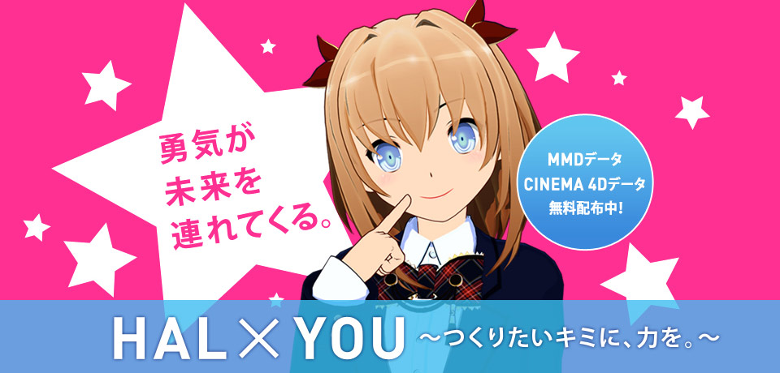

最初からうまくいくとは限らないけど、
一生懸命にやれば、少しずつできるようになっていく。
好きなものをつくる喜びでいっぱいの未来も、きっとその先にある。
勇気を出して、はじめの一歩を踏み出そう。
HAL×YOUが、キミというクリエイターの力になります。

つくる人になるための扉は、もう開いてる。
ゆうきたん”のMMD/CINEMA 4Dデータをダウンロードしよう！

| 赤りんご | |
|---|---|
| ライトノベルやゲームなどの媒体を中心に活動しているイラストレーター。 他に、デザイナーとして漫画、PCゲームの装丁やロゴデザインなどでも活動中。 また、同人活動では東方projectのイラストを多数描いている。 | |
| まさたかP | |
| 2009年より、ニコニコ動画への投稿をきっかけに動画制作の活動を開始、 MMDを使用したボーカロイド曲のPVを主に手掛けるP（プロデューサー）。第4回MMD杯に出品した『Chaining Intention【PV】』で総合優勝し、同動画は2014年3月時点で110万再生を数えている。 現在は主に商業作品での活動に主軸を置いており、SONY Xperia A、SQUARE・ENIX でのプロモーション映像や、吉川友、東京女子流のMVを手がけている。 | |
| livetune | |
| 音楽プロデューサー「kz」によるソロプロジェクト。2008年にメジャーデビュー。 2011 年12 月にWEB CM "Google Chrome: Hatsune Miku (初音ミク)"の為に書き下ろした「Tell Your World」を発表。村上隆やLady Gagaファミリーの次世代最注目アーティストZEDD、SEKAI NO OWARIのFukase、Galileo Galileiの尾崎雄貴など話題のコラボレーションで常に注目を集める新進気鋭のアーティストとして活躍中！ |